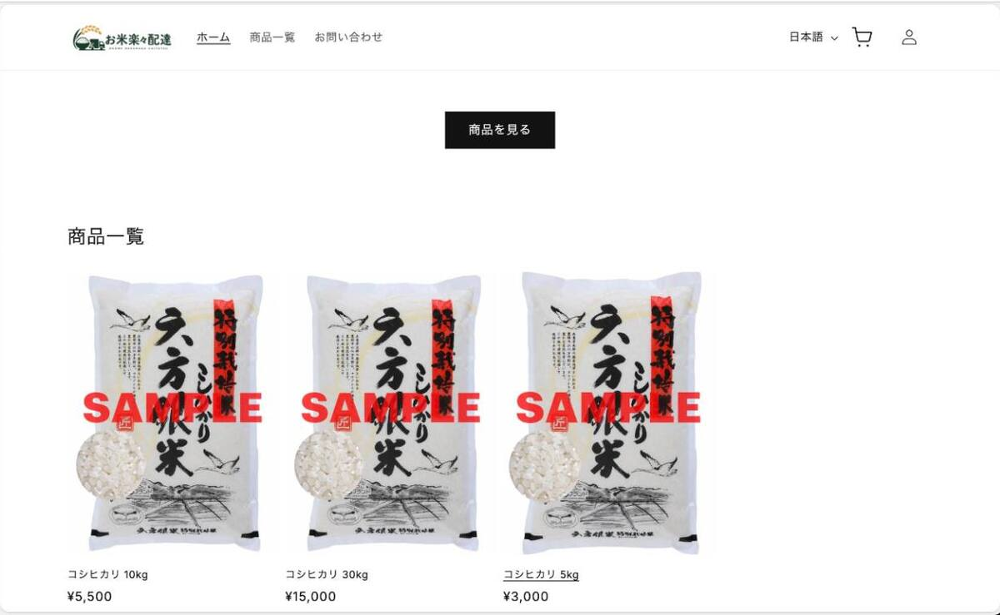
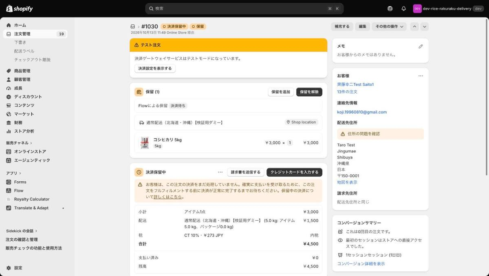
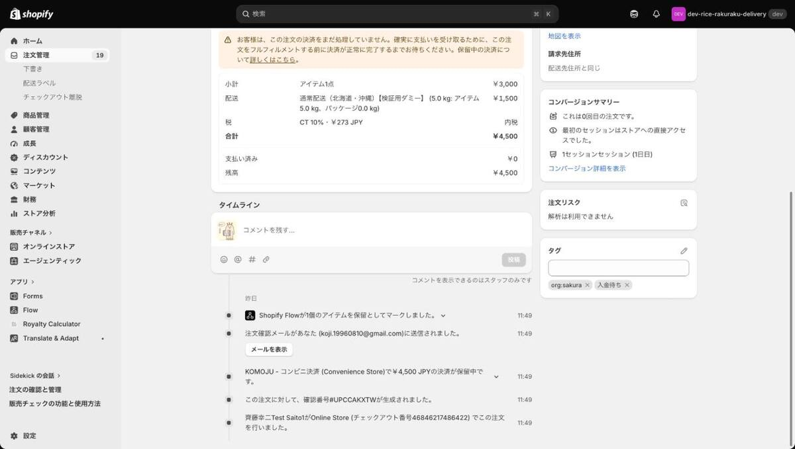
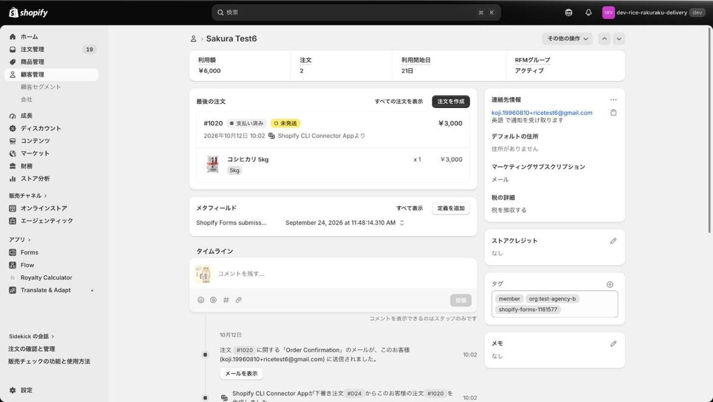
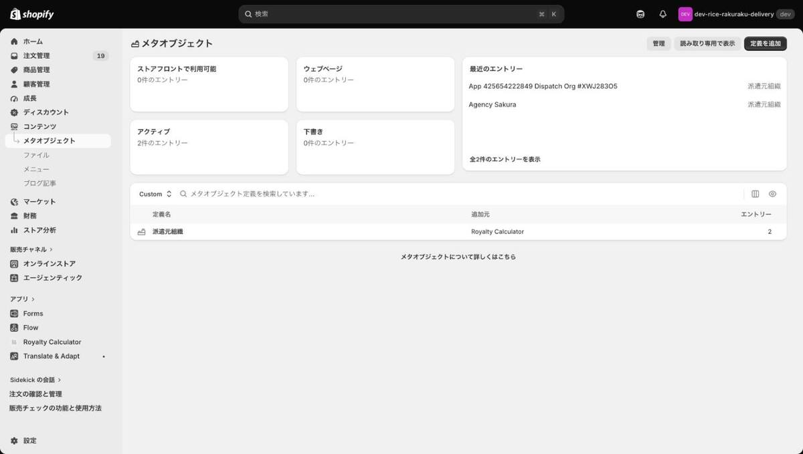
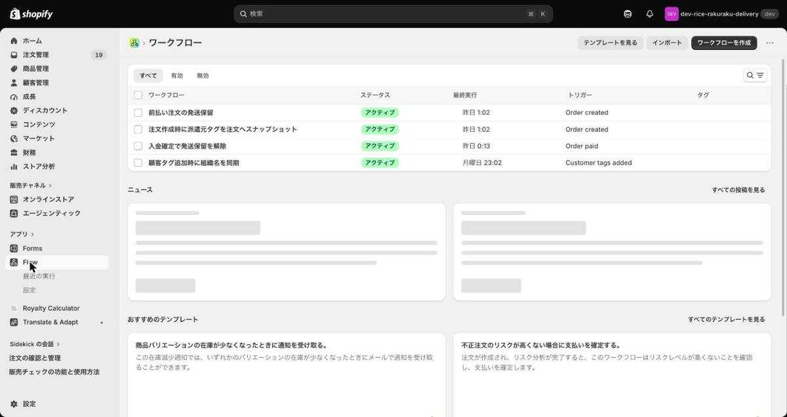
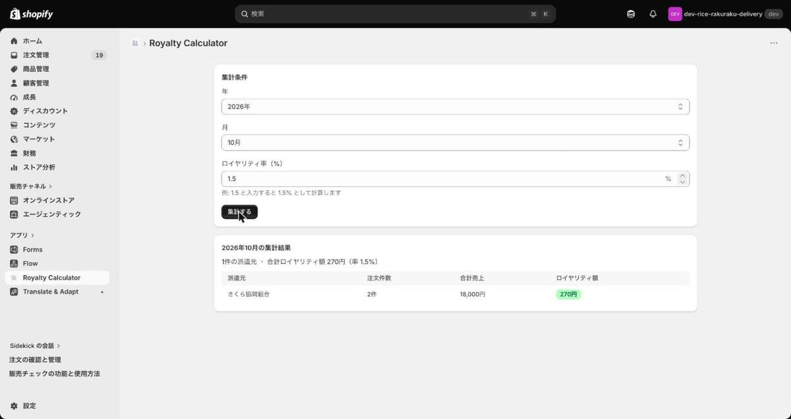

技能実習生向けお米販売サイトを、開発用のストアで一通り組み上げました。このページは、そのストアを引き継ぐ前に「どこまで出来ているか」「何が残っているか」をご自身の目で確かめていただくための案内です。
見ていただきたいのは次の3つです。上から順に進めていただくのがおすすめです。
管理画面の右上に表示されるストア名は dev-rice-rakuraku-delivery ですが、ドメインは rice-market-dev.myshopify.com のままです。名前とドメインが食い違って見えますが、同じ1つのストアです（表示名だけ後から変更したためです）。
また、このストアは開発用のためサイト全体にパスワードがかかっています。上記のストアパスワードを入力してからサイトに入ってください。
管理画面は、スタッフとして招待されたアカウントでないと開けません。招待メールが届いていない場合は、先にお知らせください。招待を送りますので、メール内のリンクからアカウントを作成してください。お客様側の画面（ストアURL）は招待なしで見られます。
会員登録から注文完了までを通してみてください。開発ストアでは実際のクレジットカード決済・代引き・銀行振込を処理できないため、購入のテストにはShopifyのテスト決済を使います。課金は一切発生しません。
rteild を入力してサイトに入る/pages/signup-76953dbc2dbb）を開き、新規会員登録をしてみる
1（決済が承認される場合をシミュレートする値です）会員登録をしていない状態でカートから購入しようとすると、購入をブロックする仕組み（会員限定販売）が働きます。こちらも試していただくと分かりやすいです。

このサイトで一番分かりにくいのが、「今どちらが動く番なのか」です。前払い（コンビニ払い・銀行振込）では入金を確認するまで発送できないため、未入金のまま発送してしまう事故が起きやすくなります。そこで、次の流れを自動化しました。
入金待ち が付き、発送できない状態になります。
発送可 に切り替わります。ここで初めて発送します。
代引きは入金の確認を待つ必要がないため、この保留の対象外です。注文が入ったらそのまま発送できます。


当初ご相談いただいた要件は、すべてShopify上で実現できることを実機で確認しました。下の表は要件ごとの状況です。「仕組みは確認済み／中身が未確定」は、動く形は出来ているけれど、入れる値（料金・翻訳文など）が決まっていないものです。
| 要件 | 状況 | 補足 |
|---|---|---|
| 会員登録した人だけが買える | 確認済み | 顧客の member タグを見て購入をブロックします。タグを外せば、すぐに購入できない状態になります |
| 派遣元ごとに別の登録URL | 確認済み | 推測しにくいURLの登録ページを派遣元ごとに作ります。検索エンジンにも載らないようにしてあります |
| 管理画面から派遣元を追加 | 確認済み | エンジニアでなくても、管理画面の入力フォームから追加できます |
| 卒業（未所属になる）の処理 | 確認済み | 管理者がタグを外す運用に加えて、お客様ご自身がアカウント画面から卒業を申告する機能も動いています |
| 転籍（別の派遣元に移る） | 確認済み | 顧客のタグを入れ替えるだけです。過去の注文の記録は変わりません |
| 派遣元へのロイヤリティ集計 | 確認済み | 注文時点の派遣元を注文側に記録するため、転籍・卒業後も過去分の集計は変わりません。できるのは集計までで、派遣元への送金は管理者が別途行います（送金機能はありません） |
| 代引き・銀行振込 | 確認済み実決済は本番待ち | 設定と管理画面の操作手順は確認済み。実際のお金の流れは本番ストアでしか試せません |
| コンビニ決済 | 確認済み本番契約待ち | 採用が決まりました。KOMOJUという決済代行をテストモードで導入し、支払い確認までの流れは確認済み。本番で使うにはKOMOJUとの契約が必要です |
| 未入金の注文を自動キャンセル | 確認済み | 一定期間（1週間を目安）入金がなければ自動でキャンセルし、在庫も戻ります |
| 入金前の誤発送を防ぐ | 確認済み | 前払いの注文は自動で発送保留＋入金待ち タグ。入金を確認すると自動で保留が外れ 発送可 に変わります |
| 多言語（日・英・越・中） | 仕組みは確認済み翻訳文が未確定 | チェックアウトまで多言語で表示できます。商品名・決済案内などの翻訳文はこれから入れます |
| 重量別・地域別の送料 | 仕組みは確認済み料金が未確定 | 配送業者と料金表が決まり次第、設定します |
| 産地情報の表示（米トレーサビリティ法） | 確認済み | 商品ごとに産地を持たせて表示できます。どこまで表示すべきかは専門家への確認を推奨します |
| お問い合わせフォーム | 確認済み | 実際に送信・受信を確認済み。名前とメールアドレスはログイン中の情報から自動で入ります |
日々の運用で使う画面と、そこで何が確認できるかの対応です。いずれも管理画面の左メニューから辿れます。
| 開く場所 | 確認できること |
|---|---|
| お客様 | 会員の一覧。各顧客の「タグ」欄に member（購入資格）と org:〇〇（所属派遣元）が入っています。卒業させるときは member を外し、転籍のときは org: のタグを入れ替えます |
| 注文 | 注文の一覧。入金待ち / 発送可 のタグで、今どちら側のボールかが分かります。注文を開いた下部の「タイムライン」に、自動保留・保留解除・自動キャンセルの記録が時系列で残ります |
| コンテンツ > メタオブジェクト > 派遣元組織 | 派遣元のマスタ。「エントリーを追加」から、組織名・識別コード（タグに使う短い英数字）・有効／無効を入力して追加します。この画面はカスタムアプリが提供しているため、アプリが入っていないストアでは表示されません |
| アプリ > Flow | 自動処理の一覧。前払い注文の発送保留・未入金注文の自動キャンセル、入金確定での保留解除、注文への派遣元タグの記録、顧客タグ追加時の組織名の同期の4本が動いています。各Flowを開くと実行履歴（いつどの注文で動いたか）も見られます |
| アプリ > Royalty Calculator | 派遣元ごとの売上とロイヤリティの集計画面。年・月・ロイヤリティ率を指定して「集計する」を押すと、派遣元ごとの注文件数・売上・ロイヤリティ額が出ます。集計までが機能で、送金は管理者が行います。開発中のカスタムアプリの画面のため、本番ストアでは改めてインストールする作業が入ります |
| 設定 > 決済 | 有効な決済方法（代引き・銀行振込・テスト決済など）。銀行振込の「決済手順」欄に振込先の案内文が入ります（現在は検証用のダミー値） |
| 設定 > 発送と配達 | 配送エリアと送料。現在は「国内配送」（一律 ¥870、合計 ¥7,700 以上で送料無料）と「北海道・沖縄」（¥1,500、ダミー金額）の2エリアです。加えて、Shopifyが初期状態で用意する「国際」エリアが有効なまま残っています |
| 設定 > ポリシー | 利用規約・返品ポリシー・プライバシーポリシー。利用規約はShopifyの標準テンプレートのままです |
| 設定 > 言語 | 追加した言語の一覧。翻訳文の入力は「Translate & Adapt」アプリから行います |
| 設定 > 通知 | 注文確認・発送通知などのメール文面と、差出人のメールアドレス |
| 商品 | 登録済みの商品（コシヒカリ 5kg / 10kg / 30kg）。産地などの追加情報も商品ページの下部で管理します |
| オンラインストア > テーマ | サイトの見た目。公開中のテーマは rice-market-storefront です。「カスタマイズ」から文言や並び順を編集できます |
特に使用頻度が高い4つの画面は、実際の表示が次のようになっています。

member を外すと購入できなくなります。


残っている項目は、性質が3つに分かれます。このうち2つ目と3つ目は、ご判断・ご用意いただかないと先に進められないものです。
開発ストアでは実際の決済を通せません。管理画面側の操作手順（入金を確認して「支払い済み」にする、など）は確認済みですが、お金が動く一連の流れは本番ストアへ移してからの確認になります。
コンビニ決済の採用は決まりました。テストモードでの動作は確認済みですが、本番で使うにはKOMOJUとの契約・審査が必要です。あわせて、未入金注文の自動キャンセルまでの待機日数を、KOMOJU側で設定する支払い期限より長くしておく必要があります（支払い待ちの注文はShopify側からキャンセルできないため）。
伝票番号の自動発行には外部アプリが必要で、候補として「プラスシッピング」をインストール済みです。ただし申込みには実在の住所・氏名・電話番号が必要で、電話連絡と発送元住所への訪問調整を経てから利用開始になります。送り状1枚あたりの費用や請求先は、申込みが完了しないと確認できません。
動作確認のために仮の値を入れてある箇所です。本番公開前に実際の値へ差し替えます。
「通常配送（北海道・沖縄）【検証用ダミー】」が ¥1,500 のままです。配送業者が決まり次第、実際の加算額に差し替えます。
5kg / 10kg / 30kg で送料を変える仕組みは確認済みですが、現在は一律 ¥870 のままです。料金表の決定後に設定します。
Shopifyが初期状態で用意する「国際」エリアが有効なまま残っています（Standard ¥3,000 など）。国内のみの販売であれば、公開前に削除します。
決済手順の案内文が 【検証用ダミー】〇〇銀行 〇〇支店 普通 1234567 カ）テスト のままです。実際の口座情報が必要です。
Shopifyの標準テンプレートのままで、商号・住所・電話番号・事業者登録番号などが未入力です。
コシヒカリ 5kg（¥3,000）・10kg（¥5,500）・30kg（¥15,000）は検証用に登録したものです。実際に売る商品・価格・産地・画像は改めて登録します。
現在は開発者のメールアドレスです。本番では事業用のアドレスに差し替えます（Gmailなどのフリーメールを指定した場合、お客様には store+...@shopifyemail.com という差出人で届く仕様です）。
配送業者を決めて、重量別・地域別の料金表を確定する必要があります。ここが決まらないと、上の送料のダミー値を外せません。あわせて、現在入っている「合計 ¥7,700 以上で送料無料」という条件をそのまま続けるかもご判断ください。
事業者名・住所・連絡先の記載が必要です。住所を開示できることは確認済みですが、具体的な記載内容が未確定です。
下訳は生成AIで作る方針ですが、返品ポリシー・振込案内・特商法表記などの法的な文面は、母語話者による確認を推奨します。誰に見てもらうかを決める必要があります。
銀行振込は、入金明細に注文番号が載りません（振込人名義・金額・日時のみ）。そのため注文との突き合わせは手作業になります。負担を減らすため、振込時にお名前の前に注文番号を入れていただく案内（例: 「1001 グエン」）を用意する方針です。
決済手段は、代引きを主軸・銀行振込を補助とし、これにコンビニ決済を加える形で確定しました。コンビニ決済では、支払い待ちの注文をShopify側からキャンセルできないという制約があるため、未入金の自動キャンセルまでの待機日数はコンビニ払いの支払い期限より長く設定します。
触っていただく中で、次のような点があれば教えてください。細かいことでも構いません。
「判断待ち」の項目については、現時点で決められるもの・まだ決められないものを分けて教えていただけると、こちらの進め方を組み直せます。